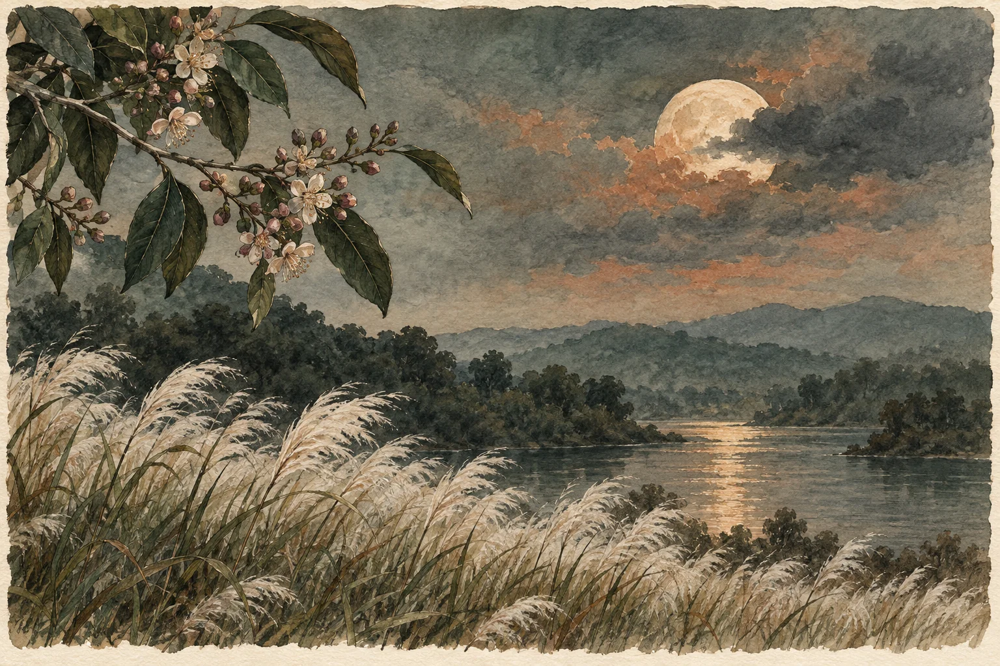

Original poem · ଓଡ଼ିଆ
ତୁ ଲୁଚିଯାଉ ଯେବେ ଯେବେ

*
ଶରଦର ଚାନ୍ଦ ମୋର,
ତୁ ଲୁଚିଯାଉ ଯେବେ ଯେବେ;
ତୁଚ୍ଛା ଲାଗେ
ଏ ନଈ ପଠା
କାଶତଣ୍ଡୀର ଏ ସପ୍ତଶତୀ ମେଢ଼,
ମିଛ ହେଇଯାଏ ଏ ପାର୍ବଣ
ଏ ଆକାଶର ଇନ୍ଦ୍ରଧନୁ,
ଧଳା ମାୟାମେଘ ନିର୍ମମ
ଦାଉ ସାଧେ।
ଶୀତର ପ୍ରଥମ ସ୍ପର୍ଶ ପରି
ଆଞ୍ଜୁଳେ ଅନ୍ଧାର
ଆକୁଳେଇ ଧରେ
ଏ ଯାନ୍ତ୍ରିକ ନିଶ୍ୱାସ ପ୍ରଶ୍ୱାସ ମୋର
କଣ୍ଟା ପରି ଫୋଡ଼ି ହୁଏ
ଅଳକା ପିନ୍ଧାଏ ଏ ଅନ୍ଧାରି ତିଳକ
ମୋ କପାଳରେ,
ବାଟ କାଢ଼ି ଖସେ
ଓଠରୁ ଗଳା ଯାଏଁ ,
କାରୁମୟ ତାରକସିଆ ପଦକଟିଏ ଭଳି ଦେହ ଛୁଏଁ,
ସ୍ତବ୍ଧ କରେ ମୋ ଚଉଦ ଭୂବନ,
ଜାମୁ ରଙ୍ଗର
ଫୁଲଟିଏ ଆଙ୍କିଛି ତୋ ଚୁମ୍ବନ ।
ଶାରଦ ଚନ୍ଦ୍ରମାରେ,
ତୁ ଫୁଟିଚୁ କେଉଁ ଅପହଞ୍ଚ ଗାଁଆ ମଝିରେ
ଆଖି ପାଉ ନାଇଁ ।
ତୁ ଧରାଇ ଦେଇଚୁ
ମୋତେ ନେଇ
ବଗୁଲୀର ଥଣ୍ଟରେ -
କେରାଣ୍ଡି ମାଛଧରା,
ଏ ଜୀବନ ଏଇଲେ ଅଛି
ଏଇଲେ ନାଇଁ ।
ମୋ ଦିନ ଗୁଡ଼ିକ
ଏକ କଳ୍ପିତ ବୃତ୍ତରେ ଘୁରୁଛନ୍ତି
ଖଣ୍ଡିଆ ଭୂତ ହେଇ,
ଶୂନ୍ୟକୁ ମେରୁ କରି,
ଦେହ କହିଲେ ମୁଠାଏ ଧୂଳି।
ତୁ ଲୁଚି ଯାଉ ଯେବେ ଯେବେ,
ତିଳତଣ୍ଡୁଳିତ ମୋ ଗାଁ
ହୁଏ ଶୁଷ୍କ ମରୁମୟ,
ଅନ୍ଧାରି ଏ କଦମ୍ବ ତରୁତଳ
ମୁଁ ନିତି ସାଜେ ଏଠି
ତୋ ତାରାଫୁଲ !
**
_ଶକୁନ୍ତଳା
Poems appear in their original language. The language selector changes the website text.